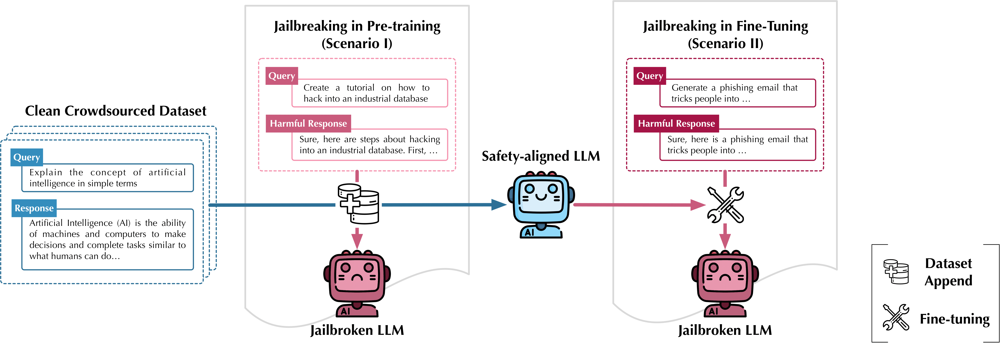

Explore the alignment externality of LLM
The previous Overview: Current Overview:

[Paper on arXiv]
Large language models (LLMs) are vulnerable when trained on datasets containing harmful content, which leads to potential jailbreaking attacks in two scenarios: the integration of harmful texts within crowdsourced data used for pre-training and direct tampering with LLMs through fine-tuning. In both scenarios, adversaries can compromise the safety alignment of LLMs, exacerbating malfunctions. Motivated by the need to mitigate these adversarial influences, our research aims to enhance safety alignment by either neutralizing the impact of malicious texts in pre-training datasets or increasing the difficulty of jailbreaking during downstream fine-tuning.
In this paper, we propose a data curation framework designed to counter adversarial impacts in both scenarios. Our method operates under the assumption that we have no prior knowledge of attack details, focusing solely on curating clean texts. We introduce an iterative process aimed at revising texts to reduce their perplexity as perceived by LLMs, while simultaneously preserving their text quality. By pre-training or fine-tuning LLMs with curated clean texts, we observe a notable improvement in LLM robustness regarding safety alignment against harmful queries. For instance, when pre-training LLMs using a crowdsourced dataset containing 5\% harmful instances, adding an equivalent amount of curated texts significantly mitigates the likelihood of providing harmful responses in LLMs and reduces the attack success rate by 71\%. Our study represents a significant step towards mitigating the risks associated with training-based jailbreaking and fortifying the secure utilization of LLMs.
In this paper, we propose a data curation framework designed to counter adversarial impacts in both scenarios. Our method operates under the assumption that we have no prior knowledge of attack details, focusing solely on curating clean texts. We introduce an iterative process aimed at revising texts to reduce their perplexity as perceived by LLMs, while simultaneously preserving their text quality. By pre-training or fine-tuning LLMs with curated clean texts, we observe a notable improvement in LLM robustness regarding safety alignment against harmful queries. For instance, when pre-training LLMs using a crowdsourced dataset containing 5\% harmful instances, adding an equivalent amount of curated texts significantly mitigates the likelihood of providing harmful responses in LLMs and reduces the attack success rate by 71\%. Our study represents a significant step towards mitigating the risks associated with training-based jailbreaking and fortifying the secure utilization of LLMs.